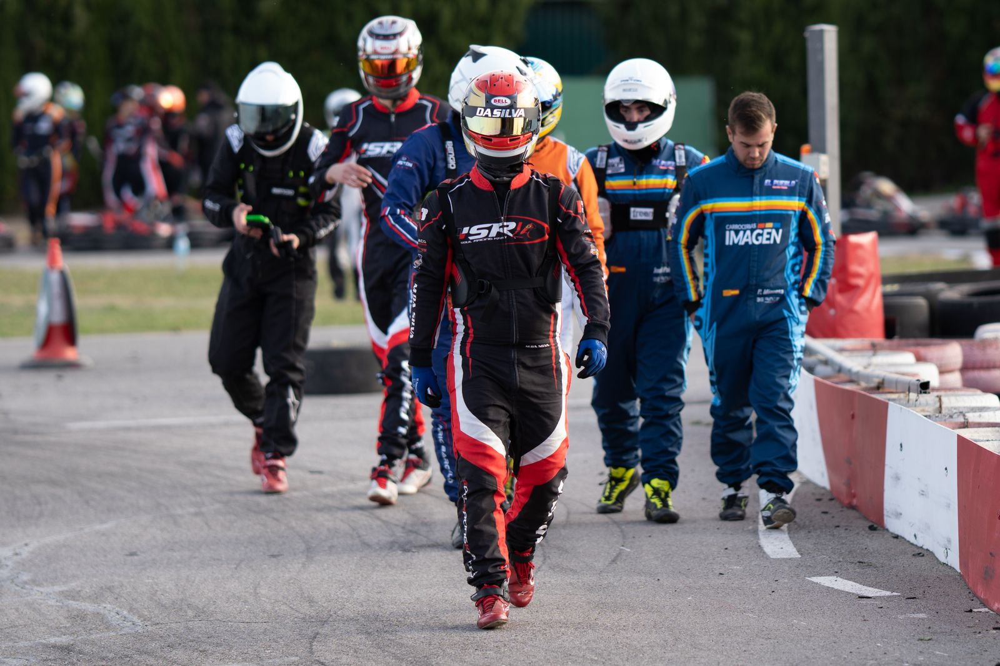
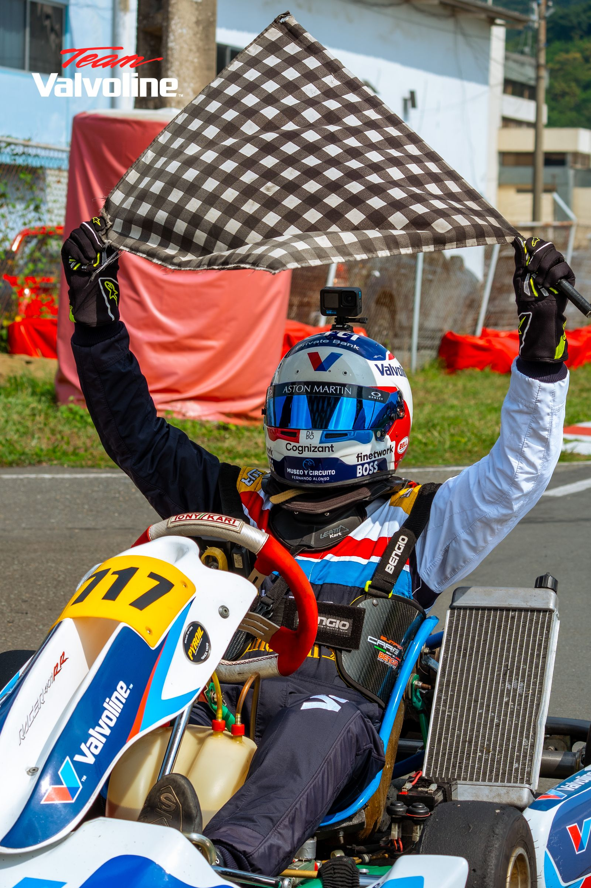

1. Essais libres
Quelques tours pour découvrir le kart, repérer les trajectoires et prendre ses marques sur le circuit.
Course de karting amateur · Samedi 5 juin 2027 · 14 h
Le Sprint du Mans est une course de karting ouverte aux pilotes amateurs, organisée au Mans, la capitale de l'endurance automobile.
L'idée est simple : permettre à tous ceux qui aiment la vitesse de vivre une vraie course, avec une organisation digne d'une compétition : essais libres, qualifications chronométrées, grille de départ, commissaires de piste et podium.
Aucune licence ni aucun matériel ne sont nécessaires. Les karts, le casque et le chronométrage sont fournis. Il suffit d'avoir au moins 14 ans et l'envie de se mesurer aux autres pilotes dans un esprit sportif et convivial.

Quelques tours pour découvrir le kart, repérer les trajectoires et prendre ses marques sur le circuit.
Dix minutes de chrono : le meilleur tour de chaque pilote détermine sa place sur la grille de départ.
Deux courses de 12 tours avec départ lancé. Chaque manche rapporte des points selon le classement.
Les points des deux manches désignent les trois premiers, récompensés par des trophées.

Le Sprint du Mans est organisé par iRacing Event, un prestataire spécialisé dans l'organisation de courses de karting amateur. Il prend en charge la réservation du circuit, les karts, la sécurité, le chronométrage et la remise des prix.
La course ouvre le Trophée iRacing Event 2027, un championnat en trois courses disputées au Mans en juin.
Voir le programme